Rijk aan kokos
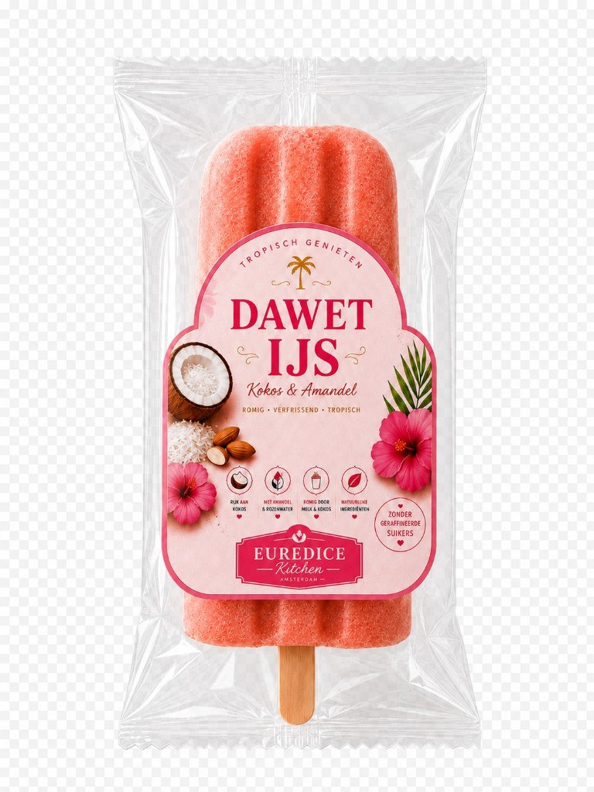
Met amandel & rozenwater
Natuurlijke ingrediënten
Zonder geraffineerde suikers
Ons verhaal
Wie ben ik?
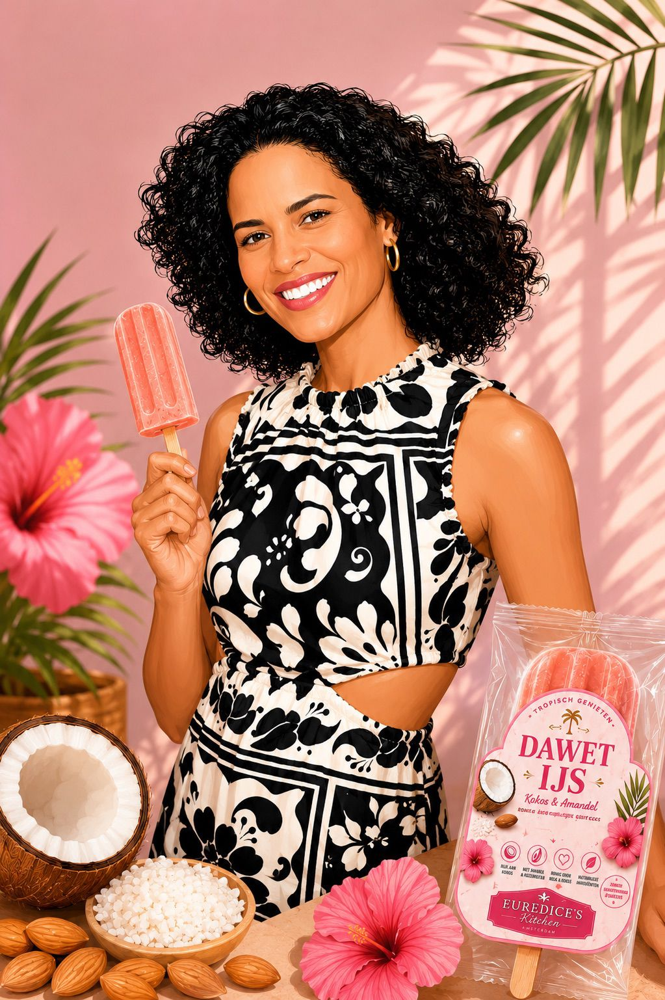
Ik ben Euredice, oprichter van Euredice's Kitchen. Met liefde maak ik tropische ijsjes die smaken naar warme herinneringen, romig, puur en vol karakter.
Op TikTok deel ik recepten en inspiratie als Lekkere gezonde recepten.
Volg Lekkere gezonde recepten (@eur273)Mijn verhaal
Met Dawet IJs breng ik een geliefde tropische smaak naar een romig ijsje op een stokje, gemaakt met kokos, amandel, rozenwater en dadelsiroop.
Een tropische beleving in elk ijsje.
Waarom dadelsiroop?
- Natuurlijke zoetheid zonder geraffineerde suikers
- Rijke, karamelachtige smaak die past bij kokos
- Bevat voedingsvezels en mineralen uit dadels
- Langzamere suikerstoot dan gewone suiker
- 100% plantaardig en bewust gekozen
Wat is dawet?
Dawet is een traditionele zoete kokosdrank met roots in de Indonesische en Surinaamse keuken. De drank staat bekend om zijn romige structuur, tropische smaak en herkenbare roze kleur.
De smaak van dawet is zacht, romig en verfrissend tegelijk, een combinatie van kokos, amandel en rozenwater die perfect samenkomt in één tropische beleving. In Suriname drinken veel mensen het ijskoud op warme dagen, vaak als echte comfortdrank vol nostalgie.
Voor mij voelt dawet als: zomer, gezelligheid, familie en tropisch genieten in één slok 💗
Met Dawet IJs heb ik die bekende smaak vertaald naar een romig ijsje op een stokje. Denk aan:
- romige kokos,
- zachte amandeltonen,
- een vleugje rozenwater,
- en die typische tropische dawet smaak waar je meteen blij van wordt.
Een beetje nostalgie.
Een beetje tropen.
En vooral héél erg lekker.
Onze ingrediënten
Kokoscrème
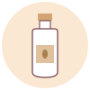
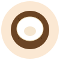
Dadelsiroop
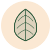
Assortiment
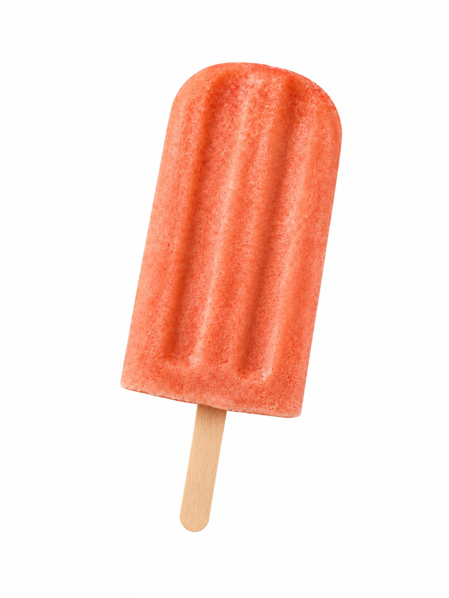
Dawet IJs
Kokos & amandel
Zachte & extra romige textuur. Tropisch genieten in handige verpakking.
Binnenkort meer smaken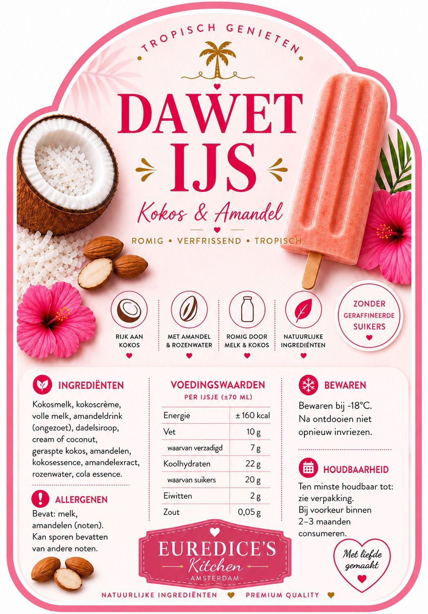
Volg onze journey
Euredice post op TikTok onder de naam Lekkere gezonde recepten (@eur273): recepten, behind the scenes en nieuws over Dawet IJs.
- Recepten & tips met dadelsiroop
- Achter de schermen bij Euredice's Kitchen
- Eerste nieuws over verkooppunten
- Proeverijen en evenementen
Binnenkort verkrijgbaar
Dawet IJs komt binnenkort bij geselecteerde verkooppunten en online beschikbaar. Schrijf je in voor de nieuwsbrief en wees als eerste op de hoogte.